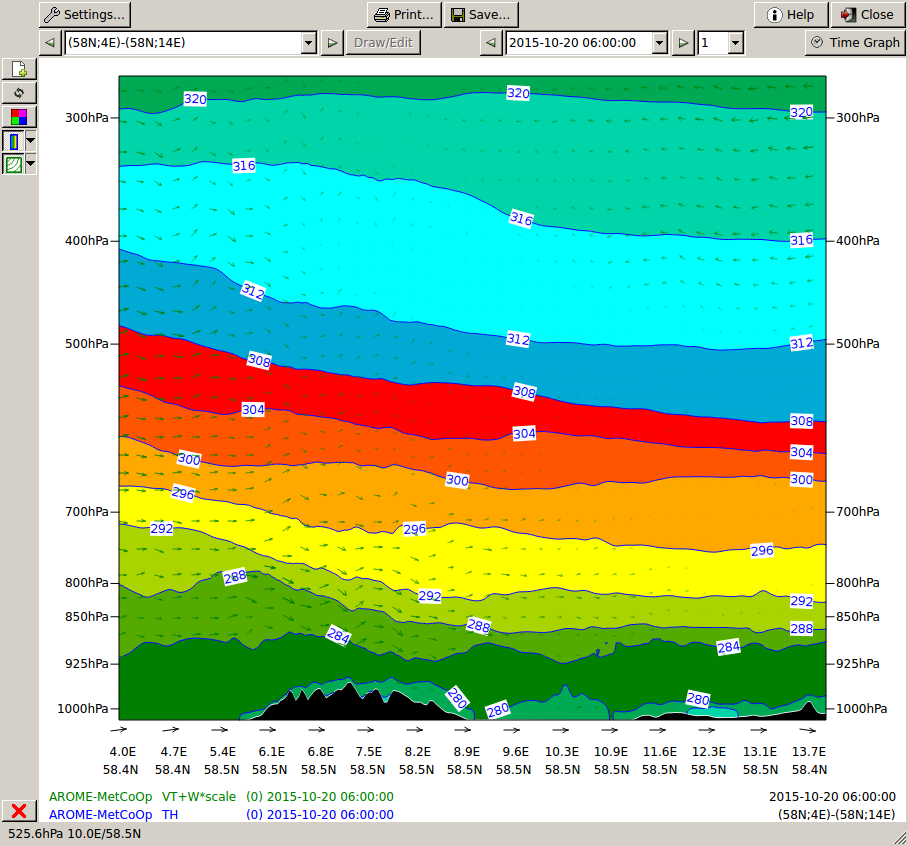

| Diana User Guide: Vertical cross sections | Previous: Vertical profiles | Next: Wave Spectrum | Index |
 Vertical cross sections
Vertical cross sections
By selecting vertical cross sections a new window is displayed to
show these. No vertical cross sections appear until model and field have
been selected. When these have been selected in the
Model/field dialogue the positions of the vertical cross
sections will be displayed on the map in the main window.
Here, the vertical cross sections can be selected with a click or
automatically follow the mouse pointer. The time follows time changes in
the main window.

Vertical cross sections and time can be selected in three different ways:

Vertical cross sections - toolbars
| Diana User Guide: Vertical cross sections | Previous: Vertical profiles | Next: Wave Spectrum | Index |